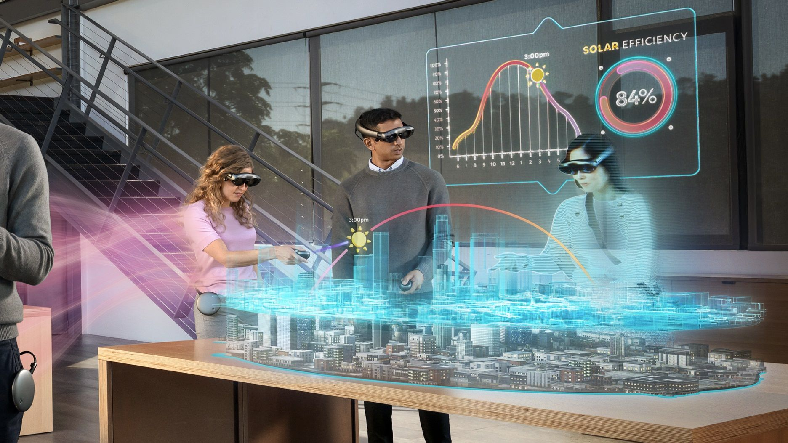

Виртуальная реальность (VR)
Виртуальная реальность (VR) — это технология, которая позволяет пользователям погружаться в полностью цифровой мир с помощью специальных устройств, таких как очки VR.
Дополненная реальность (AR)
Дополненная реальность (AR) добавляет цифровые элементы в реальный мир, используя устройства, такие как смартфоны или очки AR.
Применение VR и AR:
- Игры и развлечения.
- Обучение и образование (виртуальные классы, тренажеры).
- Медицина (тренировки хирургов, реабилитация).
- Дизайн и архитектура (создание виртуальных прототипов).